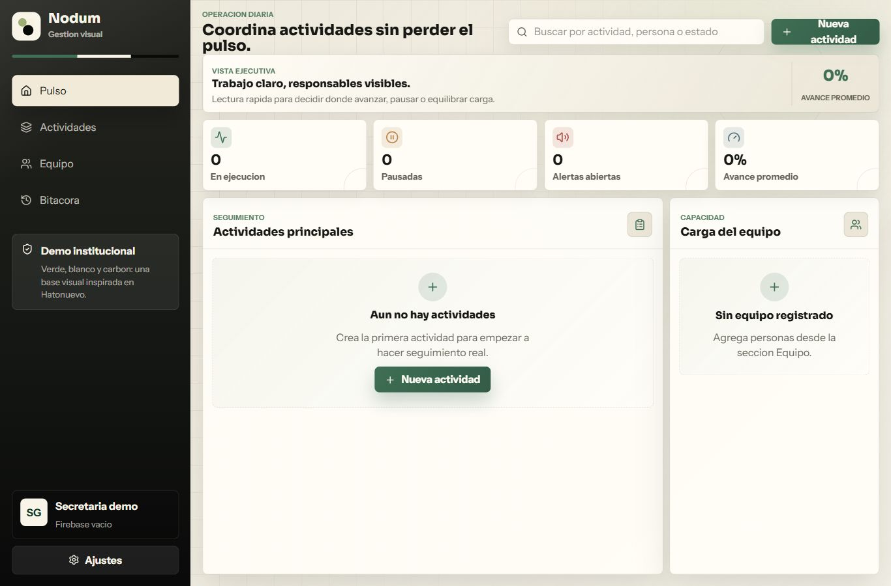
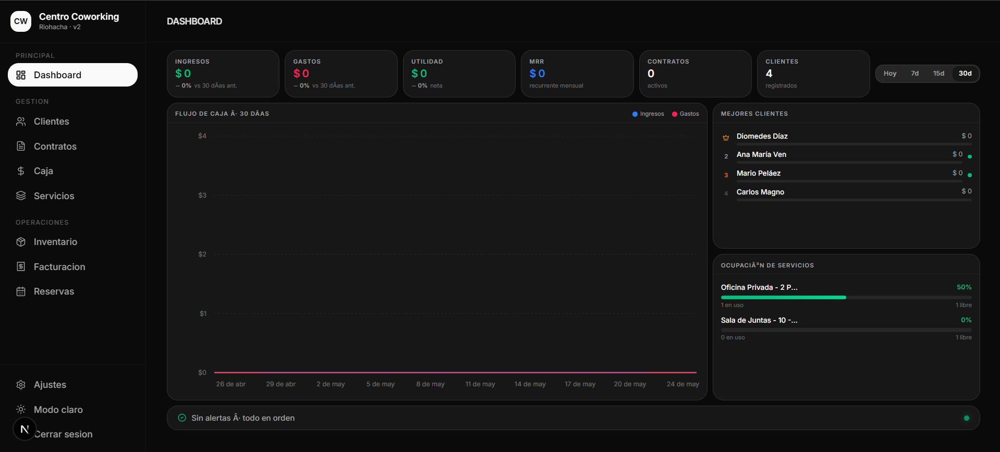

Detectamos cuellos de botella.
Startup lab + IA aplicada para pymes
Software a medida para negocios que ya no quieren operar en caos.
Diseño sistemas, dashboards, automatizaciones y agentes de IA que convierten procesos manuales en operaciones medibles, simples y listas para crecer.
Validamos con una demo funcional.
Construimos software conectado.
Medimos con dashboards y alertas.
Lo que vendemos
Menos operación improvisada. Más sistema, datos y seguimiento.
MejorIA funciona como un laboratorio de producto para pymes: entendemos el proceso, lo convertimos en software y dejamos una capa de IA donde realmente aporta.
Aplicaciones web a medida
Caja, agenda, inventario, clientes, servicios, roles y reportes sin depender de plantillas genéricas.
Dashboards ejecutivos
Indicadores para ver ventas, rendimiento, stock, productividad y decisiones pendientes.
Flujos conectados
n8n, Firebase, APIs, formularios, notificaciones, correos, WhatsApp y reportes programados.
Consultoría y talleres
Acompaño equipos para usar IA con criterio, seguridad y casos reales de productividad.
Demos y prototipos
Casos construidos para operaciones reales, no presentaciones vacías.
Cada demo muestra una dirección concreta de producto: control operativo, responsables visibles, datos conectados y una interfaz pensada para uso diario.

En producción • Medellín • 01
Moto Wash Manager
Sistema operativo con empleados activos en un lavadero de motos real en Medellín. Gestiona órdenes de servicio, registro de lavadores, pagos y configuración del negocio en una sola interfaz. Adoptado por el equipo completo en menos de 3 meses.
React
Firebase
Usuarios reales
< 3 meses adopción

Sector público • Hatonuevo, Guajira • 02
Nodum — Gestión Institucional
Plataforma web desarrollada para el municipio de Hatonuevo: coordina actividades institucionales, asigna responsables, registra avances y genera una bitácora de seguimiento. Primer sistema digital de este tipo implementado en la entidad.
React
Firebase
Sector público
Primer sistema digital

En desarrollo • Medellín • 03
Centro Coworking
Sistema de gestión para espacios de coworking: reservas de salas, control de membresías, facturación y seguimiento de ocupación. Diseñado para operar desde el día uno con datos reales del negocio.
React
Firebase
En desarrollo
Demo pronto
IA aplicada — en construcción activa
Usando IA no solo para construir software, sino para aprender más rápido y resolver mejor.
Mi ventaja diferencial: me apoyo en modelos de lenguaje y agentes de IA para investigar, leer documentación extensa y acelerar implementaciones. Estoy en etapa de experimentación aplicada con arquitecturas como Hermes Agent, construyendo capacidades reales paso a paso.
IA como herramienta de trabajo
Uso modelos como GPT y Claude para investigar, depurar, leer docs complejas y acelerar decisiones de arquitectura sin perder criterio propio.
Automatizaciones con n8n
Flujos conectados entre sistemas: formularios, notificaciones, WhatsApp, Firebase y APIs externas. Ya implementados en proyectos reales.
Agentes supervisados (en desarrollo)
Experimentando con tareas persistentes, memoria y canales remotos. El objetivo: agentes que trabajen con aprobación humana, no sin ella.
Si tu empresa quiere explorar cómo incorporar IA de forma práctica y segura, hablemos →
Mario Yesid Peláez Sánchez
Ingeniero de Sistemas · 3 años de experiencia · Medellín, Colombia
Construyo software que las personas realmente usan, respaldado por datos y IA aplicada.
Vengo de procesos operativos, datos y reportes. Hoy diseño sistemas completos para pymes: desde el diagnóstico del proceso hasta el software en producción con usuarios reales. Me apoyo en IA para aprender más rápido, implementar mejor y resolver con más criterio.
Domino
React
TypeScript
Firebase
Firestore
SQL
MCP
Antigravity
Cloud Code
Uso activo
Python
n8n
Git
Tailwind
REST APIs
Enfoque actual — Agentes IA
OpenCLab
LangChain
Hermes Agent
Agentes supervisados
Primer paso